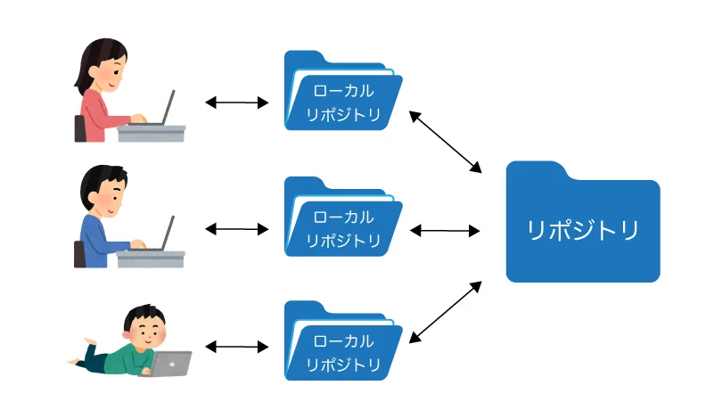

gitに関して
~gitとは~
分散型バージョン管理システムである
ファイルのバージョン管理がとても簡単になり、
エンジニアだけでなくWebデザイナーやWebライターも利用するツールである。
~gitでできること~
- 古いバージョンに簡単に戻す
- ファイルの変更履歴を管理する
- チームで共有できる
例えばiphoneではアップデート前に戻すことはできないが、
gitで管理しているファイルであれば前に戻すことができるのである。
~リポジトリとは~
ファイルを保存するための保管庫である

gitの最大の特徴である「分散型」とは、自分のパソコンに全ての変更履歴を含む完全なフォルダの複製を作成できるということである。
HTMLに関して
~HTMLとは~
Hyper Text Makeup Language の略
Hyper Text: 単なるテキスト（文字）を超えたテキストデータ
Makeup: 目印をつける コンピュータが読み取れるタグをつける
Language: 言語
つまり、「さまざまなデータをコンピュータが読み取れるようにタグ付けする言語」という意味である。
htmlを使用することで、テキストや画像。音声、動画などのコンテンツをWEBページ上に表示することができる。
重要な用語ータグ
タグとはテキストに意味を与える目印である
100以上存在するタグの中で、WEB制作の初心者が覚えるべき主な８つのHTMLタグ
- aタグ：Webサイトにリンクを貼り付ける
- brタグ：テキスト内や間で開業を行う brはBreak（改行）の略
- divタグ：囲った部分をグループ化する
- hタグ：見出しを表示する
- imgタグ：Webタイト内に画像を表示する
- tableタグ：Webサイト上に表を作成する
- pタグ：一つの段落を指定する
- リストタグ(ul・ol・li)：箇条書きのように表示する
- うわあああ
デザイン演習Ⅰ・Ⅱトップページ
XBPトップページ
yahoo
pdfファイル
ちいかわ
kanagawaunivofficial みなとみらいキャンパス紹介動画↑